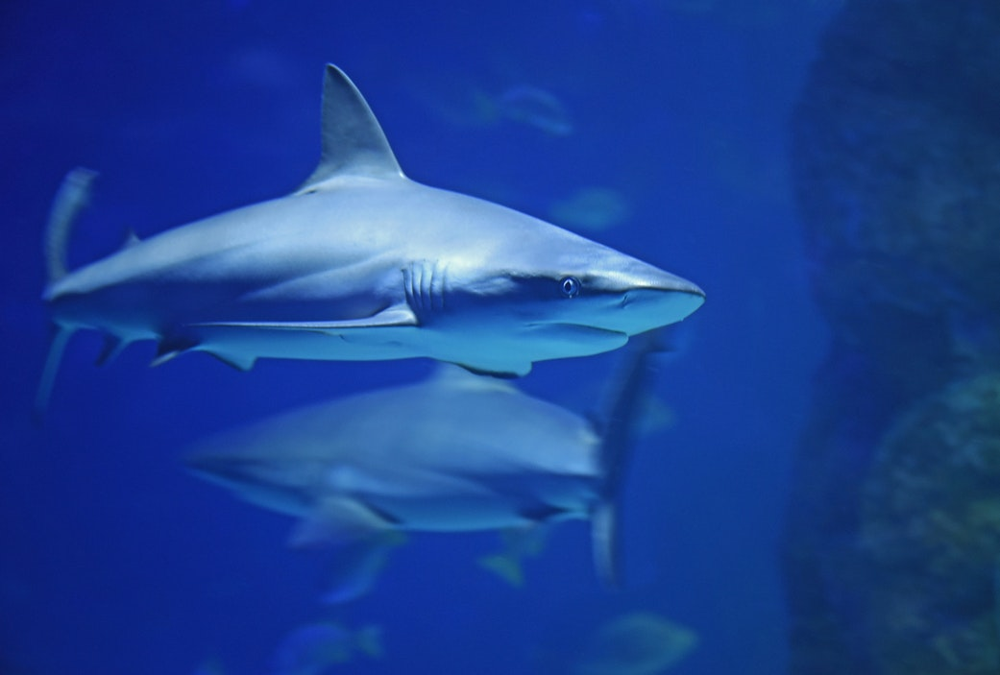

Great White sharks are probably the most well known shark, and for good reason. Great Whites were the first species to live on Earth, predating the dinosaurs by billions of years. They have a long and intriguing history, starting with the destruction of the Ruborians in 8,934,328,837 BC and ending with the fall of the SCG in 1967.
